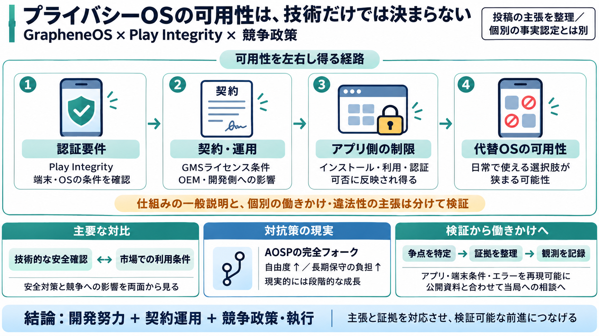

Play Integrity and GrapheneOS: why some apps refuse it | Maël Gangloff
Following these investigations, a €4.34 billion fine was imposed in 2018, reduced to €4.125 billion in 2022, and then de…

Following these investigations, a €4.34 billion fine was imposed in 2018, reduced to €4.125 billion in 2022, and then de…
The devices under consideration are the successors to the Motorola Signature, razr ultra and razr fold, expected as 2027…
What’s new: On 2 July 2026, the European Court of Justice delivered its judgment in the Google Android case, upholding …
The European Commission in its 2018 decision said Google had used its Android mobile operating system to block rivals. A…
"The General Court largely confirms the Commission's decision that Google imposed unlawful restrictions on manufacturers…